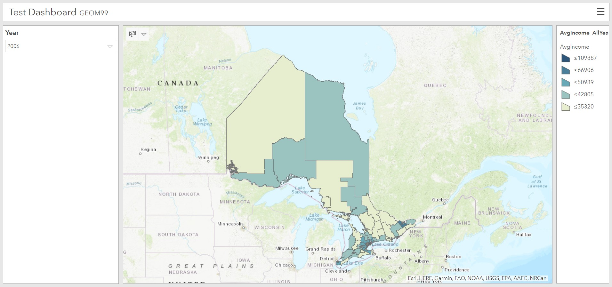

A large part of the work that we did had to do with exploring the software options that are available to us.
Below, you will see examples of what we liked and did not like, what worked and what did not.
Brief overview of the software/configurable app that was used.
When attempting to load the time series as a feature service within ArcGIS Online, only some portions of the polygon dataset would load, for unknown reasons. Had to correctly format the dates and then export as a shapefile in order for ArcGIS Online to be able to recognize and set the time series. Had to do some configuring with the web app but for some reason ArcGIS online formats dates oddly and I'm not sure why. Web app needs more configuration in terms of slow rendering speeds/date configuration.
Brief overview of the software/configurable app that was used.
Wanted to explore other means of delivery through ESRI aside from the time series noted earlier. AGOL Dashboard offered a way to import a web map and add supplementary data and widgets to further enhance the web map. This product provided an easy way to configure the view, however, if this delivery method is selected, more time needs to be spent configuring a working layout. Dashboard allowed for manual filtering (using a drop-down menu) based on the data within the web map. Category selectors were able to highlight the data belonging to each census year and only display that year's data on the map. Additionally, graphs and charts can be added to further supplement the web map. The next steps for this form of delivery would be to further explore the widgets that could be used, as well as embedding the dashboard in a webpage.
Mapbox is a world-renowned open-source software that is used by recognized organizations such as Ancestry, the Weather Company, Facebook, Lonely Planet, Tableau and the list goes on. Mapbox is a location data platform for both developers and designers and is available anywhere around the world with live updates happening every minute. A simple way to understand the Mapbox platform is to compare it to a pile of Lego blocks that users can use to assemble various web configurations to achieve their needs and tell their story.
The goal in mind when exploring this option was to configure a readily available template for generating a time slider. This appeared to be a relatively straightforward template to configure, but upon further inspection, it became apparent that it in fact requires a lot of configuration that we struggled to wrap our heads around.
We began by publishing the income layer to AGOL from ArcGIS Pro, once with time enabled on the layer, and once without. From there, we began our adventure of attempting to dissect the Mapbox template of interest. We had a difficult time configuring the code to display our map layers, as geoJSON is hard to understand as variables when there are so many for each electoral riding. We attempted to query the layers to represent a single year (Where YEAR = 2011) to draw the geoJSON into the time series web application. This integration method proved unsuccessful and requires further exploration (perhaps with a hosted service on ArcGIS Server).
After dedicating many hours toward sorting out the variables in the code and deciphering how to integrate our service, we determined that it was not worth pouring more time into. While this was a bit of a hard pill to swallow (we are very stubborn), this was the best decision for us, as we were starting to lean toward using ArcGIS.
Leaflet is an open source JavaScript library that is available for download at only 38KB for the current 1.7 version library. Its configuration ability is simple and can be enhanced with many other open and non-open source web applications such as Mapbox, OpenStreetMap, and ESRI suite. This application is growing in popularity throughout the web development community since it has tons of documentation written for tutorials, additional plugins, and source code references. Although this plethora of resources indicates it is easily navigated and readable, I can assure you - it is not. In fact, there are so many different rabbit holes you can fall down trying to find a solution to your problem that you forget what you were looking for in the first place.
The primary exploration was first to load average income data as unique values assigned as low income, middle income, and high income to represent a choropleth map. This was easily configured using a hosted feature service from ArcGIS Online. However, the cartography using Leaflet is not very appealing or easily configurable and can be seen in the figure (HERE).
The next step was to explore the time series aspect for our problem statement. Creating a web application through Leaflet was easy using the ESRI_Leaflet plugin that allowed us to use published services from ArcGIS Online without converting file types. This plugin also offered a visualizing time from a feature layer - however the application was not user friendly for our purposes of displaying a choropleth map of different years and so it was abandoned. There were few other configurations that could use a time series aspect. However, none accomplished our primary goals of having a user-friendly application.